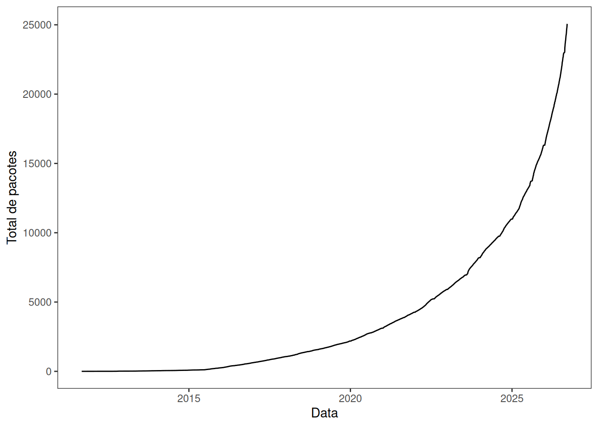

Código
#
ggplot(data = cran_table_resumo)+
geom_line(aes(x = data, y = total))+
scale_x_date(name = "Data")+
scale_y_continuous(name = "Total de pacotes")
R é uma linguagem de programação dinâmica em um desenvolvimento em tempo real. Especialmente voltada para trabalhos em análises estatísticas, como a manipulação, análise e visualização de dados. Seu nome surge das iniciais dos seus criadores (
Atualmente existem diversos materiais on-line onde se pode aprender mais sobre R e seus pacotes, como livros digitais (“R para Ciência de Dados (2ª edição)”, [S.d.]), comunidades on-line (“R-bloggers”, [S.d.]), RPbus (“RPubs”, [S.d.]), guias de referência (“Cheatsheets ”, [S.d.]), etc.
Fundamentalmente forte em análises estatísticas (teste de hipóteses, análises descritivas, desenvolvimento de modelos estatísticos robustos);
Excelente para a produção de gráficos e relatórios;
É uma das linguagens mais utilizadas em ciência de dados, especialmente em trabalhos que envolvam análise exploratória (Morettin; Motta Singer, 2025). Entretanto, python ainda é a preferida em trabalhos envolvendo aprendizado de máquina;
Perde desempenho em trabalhos que envolvam grande volume de dados (como alternativa a linguagem possui recursos extras, como data.tables ou a integração com outras ferramentas como Apache Sparkly);
Possui uma curva de aprendizado maior em comparação com python para usuários iniciantes ou não-estatísticos;
Muito utilizado no meio acadêmico, especialmente em pesquisas experimentais;
Atualmente, R está em 9o lugar entre as linguagens de programação no quesito popularidade (“TIOBE Index - TIOBE”, [S.d.]);
Possui um grande repertório de pacotes e funções, onde muitos são focados em análises estatísticas.
Atualmente, existem 25067 pacotes no repositório oficial (Hornik; R Core Team, 2026). Além de outros como aqueles hospedados no GitHub, R-Universe (“R-universe - browse and search R packages”, [S.d.]), etc. Além do mais, a Figura 1 mostra um perceptível crescimento exponencial ao longo dos anos.
#
ggplot(data = cran_table_resumo)+
geom_line(aes(x = data, y = total))+
scale_x_date(name = "Data")+
scale_y_continuous(name = "Total de pacotes")

Editor: Onde o código é escrito;
Console: Onde o R é executado;
Environment: Painel com todos os objetos armazenados na memória;
Output: Painel contendo navegador de arquivos, lista pacotes instalados, ajuda e visualização de relatórios, apresentações e dashboards.
A versão Open Source do RStudio pode ser baixado e instalado gratuitamente nas plataformas windows ou linux, ambas disponíveis na página da Posit (“Posit | Data Science Platform for Enterprise Teams”, [S.d.]).
A versão online está disponível na página da Posit Cloud (“Posit Cloud”, [S.d.]).
O “R base” deverá estar previamente instalado no computador.
Objeto é tudo que pode ser criado e armazenado na memória (vetor, lista, função, gráfico, modelo estatístico, etc);
Um objeto pode ser criado utilizando o operador de atribuição (<- ou =).
objeto <- funçãoExemplo:
valor <- function(x) {return(x)}
print(valor)function (x)
{
return(x)
}